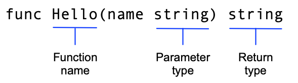

这是一个介绍 Go 语言基本特性的系列教程的第一部分。如果你刚接触 Go，请先阅读教程：Go 入门，了解 go 命令、Go 模块以及非常简单的 Go 代码。
本教程将创建两个模块。第一个模块是一个库，供其他库或应用程序导入；第二个模块是一个应用程序，作为调用方使用第一个模块。
本系列教程包含七个简短的主题，分别介绍语言的不同部分。
首先创建一个 Go 模块。模块将一个或多个相关的包组织起来，提供一组独立且实用的功能。例如，可以创建一个包含金融分析函数的模块，让编写金融应用程序的开发者复用你的工作。有关模块开发的更多说明，请参阅开发和发布模块。
Go 代码按包组织，包又按模块组织。模块声明运行代码所需的依赖，包括 Go 版本以及所依赖的其他模块。
向模块添加功能或改进功能时，可以发布模块的新版本。调用模块中函数的开发者可以导入更新后的包，先使用新版本进行测试，再将其用于生产环境。
cd 切换到用户主目录。
在 Linux 或 Mac 上：
cd
在 Windows 上：
cd %HOMEPATH%
greetings 目录，用来存放 Go 模块的源代码。
例如，在用户主目录中运行以下命令：
mkdir greetings cd greetings
go mod init 命令初始化模块。
运行 go mod init 命令，并传入模块路径；这里使用 example.com/greetings。如果要发布模块，这个路径必须能让 Go 工具下载到该模块，通常就是代码仓库的地址。
有关通过模块路径为模块命名的更多说明，请参阅依赖管理。
$ go mod init example.com/greetings go: creating new go.mod: module example.com/greetings
go mod init 命令会创建 go.mod 文件，记录代码的依赖。目前，该文件只包含模块名称和代码所支持的 Go 版本。随着依赖不断增加，go.mod 文件也会列出代码依赖的模块版本。这样既能确保构建可复现，又能让你直接控制所使用的模块版本。
package greetings
import "fmt"
// Hello returns a greeting for the named person.
func Hello(name string) string {
// Return a greeting that embeds the name in a message.
message := fmt.Sprintf("Hi, %v. Welcome!", name)
return message
}
这是模块中的第一段代码。调用方调用它时，它会返回一句问候语。下一步，你将编写调用这个函数的代码。
在这段代码中，你完成了以下操作：
greetings 包，用于组织相关函数。
Hello 函数，用于返回问候语。
这个函数接收一个名为 name、类型为 string 的参数，并返回一个 string。在 Go 中，名称以大写字母开头的函数可以被其他包中的函数调用，这种名称称为导出名称。有关导出名称的更多说明，请参阅《Go 语言之旅》中的导出名称。

message 变量，用来保存问候语。
在 Go 中，:= 运算符可以在一行中完成变量的声明和初始化（Go 会根据右侧的值推断变量类型）。如果采用完整写法，则可以写成：
var message string
message = fmt.Sprintf("Hi, %v. Welcome!", name)
fmt 包的 Sprintf 函数创建问候消息。第一个实参是格式字符串，Sprintf 会将 name 参数的值填入 %v 格式占位符所在的位置。插入 name 的值后，就得到了完整的问候语。
下一步，你将从另一个模块调用这个函数。